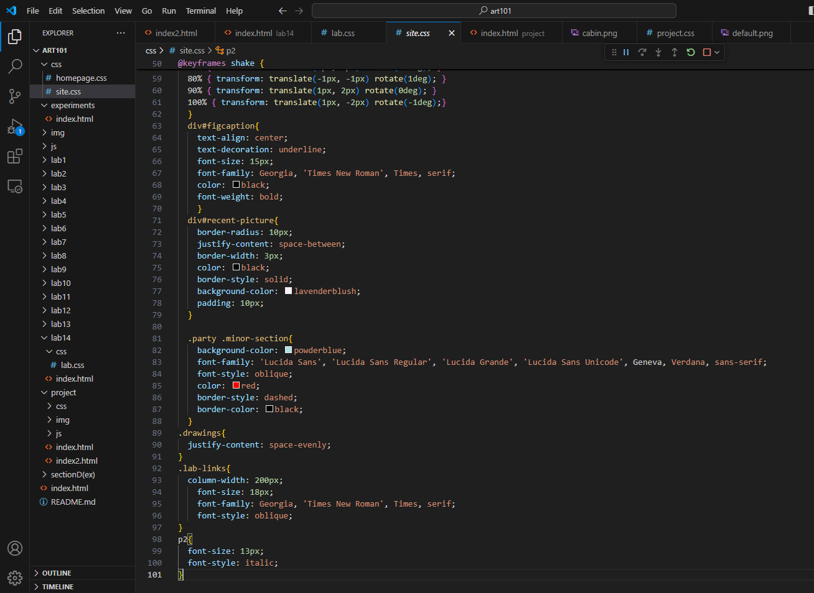
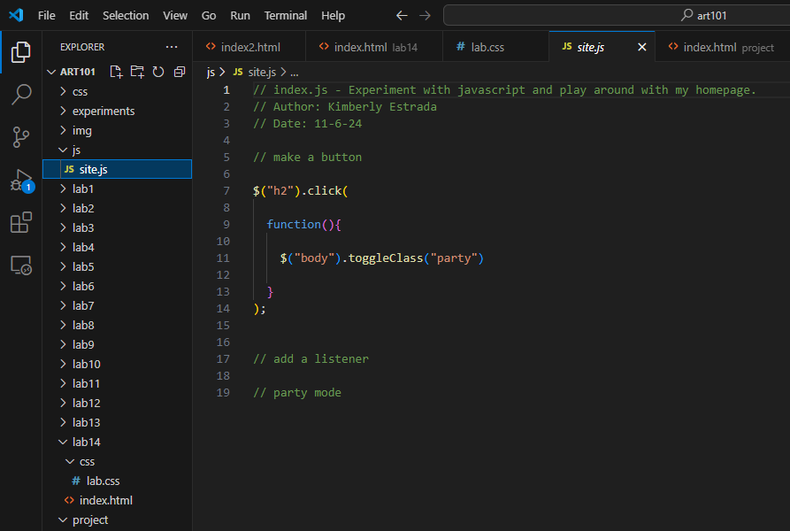

Lab 14 - Debugging Tools and Strategies
Challenge
Restate the challenge of the lab here.
Problems
What problems arose? How did you solve them?
Reflection
Put your reflections about this assignment here. How did it go? What kind of energy did you put into the assignment?
Results
Debugging
Explain how you improved your past files?

